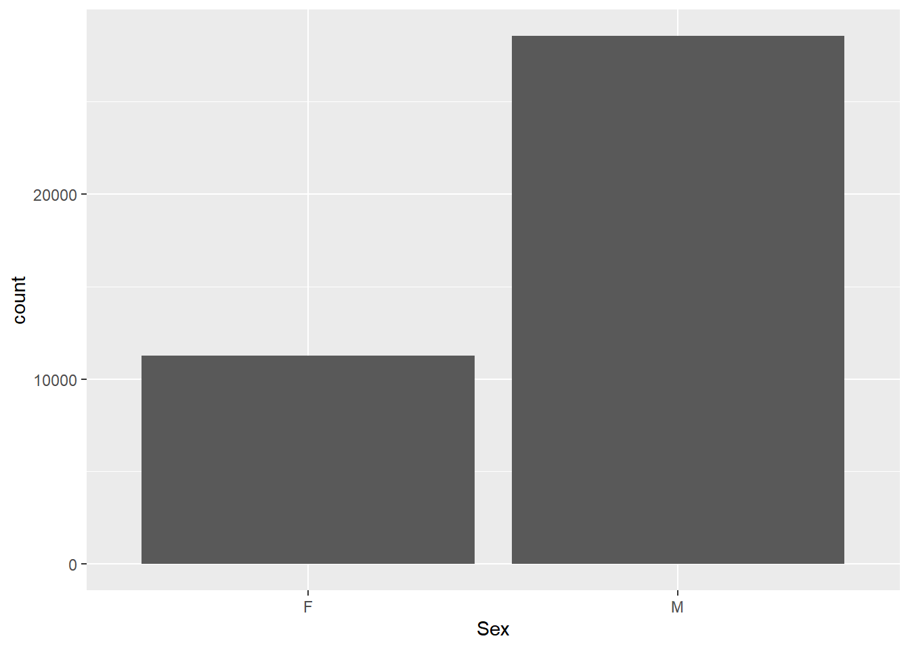
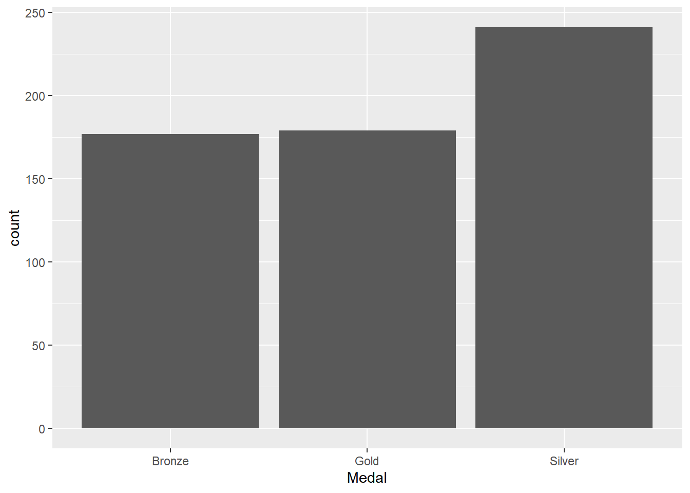
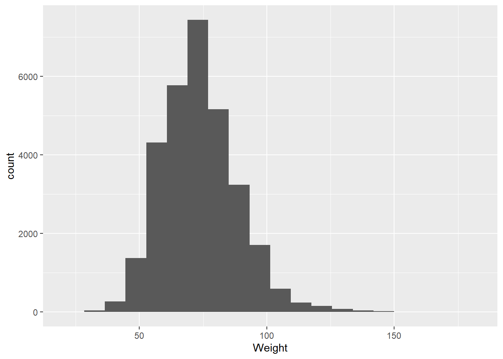

One of the main reasons data science exists is that there is an enormous amount of data available for study that have already been collected or are actively being generated. Data collected by researchers, governments, corporations, and even the public at large are growing every day, and this offers tremendous opportunities to combine, remix, and re-use data to gain insights about the world around us. But this comes with a caveat: secondary data users have no control over how the data are generated, nor will they necessarily get a complete account of how it was generated.
Before putting a dataset to a secondary use, you’ll need get familiar with it. In particular, you’ll want to know:
Are these data useful for a given purpose?
Is the quality of these data sufficient to use?
Do these data show potentially meaningful patterning?
Exploratory Data Analysis is an approach to evaluate the composition and structure within a dataset prior to formal modeling or hypothesis testing. In this process, we use visualizations, transformations, and statistical summaries to systematically look at data and identify where interesting or relevant patterning lies.
There is no definitive set of rules for how to conduct this kind of analysis. Instead, there are a wide array of guidelines and techniques you might apply depending on what kind of data you have and what aspects of the data you are interested in. In the rest of this section, we’ll look at what kinds of data we might expect to encounter, and then look at them individually.
Knowing Your Data
A first step towards exploring data is to understand what kind of data you’re dealing with. As we discussed in Week 4, different kinds of data will be better represented by different kinds of visualizations. But they will also be amenable to different kinds of analyses, and have different peculiarities.
Have a look at the first few rows of the olympics dataset:
olympics<-read_csv("data/olympics.csv")
Rows: 39783 Columns: 10
── Column specification ────────────────────────────────────────────────────────
Delimiter: ","
chr (6): Name, Sex, NOC, Season, Sport, Medal
dbl (4): Age, Height, Weight, Year
ℹ Use `spec()` to retrieve the full column specification for this data.
ℹ Specify the column types or set `show_col_types = FALSE` to quiet this message.
olympics
# A tibble: 39,783 × 10
Name Sex Age Height Weight NOC Year Season Sport Medal
<chr> <chr> <dbl> <dbl> <dbl> <chr> <dbl> <chr> <chr> <chr>
1 Edgar Lindenau Aabye M 34 NA NA DEN 1900 Summer Tug-… Gold
2 Arvo Ossian Aaltonen M 30 NA NA FIN 1920 Summer Swim… Bron…
3 Arvo Ossian Aaltonen M 30 NA NA FIN 1920 Summer Swim… Bron…
4 Juhamatti Tapio Aal… M 28 184 85 FIN 2014 Winter Ice … Bron…
5 Paavo Johannes Aalt… M 28 175 64 FIN 1948 Summer Gymn… Bron…
6 Paavo Johannes Aalt… M 28 175 64 FIN 1948 Summer Gymn… Gold
7 Paavo Johannes Aalt… M 28 175 64 FIN 1948 Summer Gymn… Gold
8 Paavo Johannes Aalt… M 28 175 64 FIN 1948 Summer Gymn… Gold
9 Paavo Johannes Aalt… M 32 175 64 FIN 1952 Summer Gymn… Bron…
10 Kjetil Andr Aamodt M 20 176 85 NOR 1992 Winter Alpi… Gold
# ℹ 39,773 more rows
This dataset includes each Olympic medallist from 1896 to the 2016 summer games. Just looking at the preview of the tibble, we can see a lot of different kinds of data here. Some of it is numbers, some of it is character values. In previous sessions, we’ve talked about these as numerical and categorical data. But even these categories are broad: there are different kinds of numerical data here, and different kinds of categories. A more detailed way to distinguish these kinds of data is in terms of level of measurement, which are nominal, ordinal, interval, and ratio. We’ll go through each one of these individually so we know what we’re looking at.
Nominal data
Nominal data is data without a meaningful distance or order between values. In other contexts we’ve referred to this as categorical data, which means that each distinct value is used to assign the observation to a given group or category. For example, if the dataset were ice cream cones sold at an ice cream parlor during a given week, the ice cream cones might be grouped by flavor (e.g., chocolate, vanilla, cookies & cream, etc.). The collection of flavors are categories, or names, making this a nominal variable.
This kind of data can also be thought of as discrete, because the data exist within a set of values that have a non-infinite gap between them. This is different from continuous, or measured, data, which we’ll talk about in a moment.
In the olympics dataset, there are several columns containing nominal data. These include:
Name
Sex
NOC, which stands for National Olympic Committee
If we want to look at this nominal data, we have a few options, but our most trusted tool is the bar plot, which will show us the counts of each category.
ggplot(olympics,aes(x=Sex)) +geom_bar()

By adding another aesthetic (like fill color), we can make a stacked bar to look at more than one nominal variable.
This is displaying the data in terms of two nominal variables: sex of medalist, and the season of their competition. Already, we’re starting to see patterns. There are far more male than female medalists in this dataset, and overall there are fewer Winter than Summer medals. Why might this be? Think about this before moving on.
Seeing patterns can put us in a mindset for finding an explanation. A quick look at the history of the games can get us the information we need. For the first pattern, there were fewer events open to female participants in the early Olympic games relative to today:
Like nominal data, ordinal data is categorical, but unlike nominal data it has a logical order. You might imagine someone ranking their favorite desserts, or giving their satisfaction on a scale of 1 to 5. This ordering is a usable source of information for analytic purposes.
In our Olympics dataset, there is only one ordinal variable, and that’s the Medal column, whereby the medal is indicative of the rank of the athlete in the competition. The ranking, of course, is Gold > Silver > Bronze.
Again, bar charts are going to be a good choice for this. Let’s view the numbers of each medal category brought home by Denmark:
#subset to just Denmark's medalsolympicsDEN<-olympics[olympics$NOC=="DEN",]#plot the dataggplot(olympicsDEN,aes(x=Medal)) +geom_bar()

There’s an issue with this plot, though: we usually wouldn’t want to treat ranked data out of order. We’ve seen one way to deal with this before, using the fct_infreq function:
Now the medals are re-ordered based on their frequency, but this order doesn’t make sense with respect to the Gold > Silver > Bronze ordering inherent in Olympic medals. To deal with this, we can use the fct_relevel function.
Here, the function takes as an argument the variable name, followed by the list of values in the correct order. Now our medals are listed in the correct order, but of course this has messed with our x-axis label. Using proper labels is important when you’re using graphics to communicate with someone else, but isn’t necessary when you’re just looking at data by yourself as long as you know what the variables are. But if we wanted to change the labels, we can add a labs layer:
Beyond visualization, there are certain statistical tests designed for dealing with ranked data. We’ll touch on these in a later lecture.
Interval and Ratio
Interval and ratio data are examples of numerical data. This means that the distances between values have meaning, so they can be used in arithmetic operations (e.g., you can add them, subtract them, multiply them, etc.). If the values are integers only (for example, number of offspring in a litter), then they are discrete. If they are measuring something where the space between whole values is infinitely divisible (e.g., 5.4, 5.41, 5.413, 5.4138, etc.), then they are continuous.
Interval data are numerical data with no true zero value; in other words, zero does not indicate absence. Usually, the presence (or possibility) of negative values is a dead giveaway that you’re dealing with interval data. We don’t have any interval data in this Olympics dataset. However, something that would be interval data would be latitude and longitude coordinates of the host cities:
oCities<-read_csv("data/olympicCities.csv")
Rows: 43 Columns: 6
── Column specification ────────────────────────────────────────────────────────
Delimiter: ","
chr (3): City, Country, Season
dbl (3): Times_Hosted, Latitude, Longitude
ℹ Use `spec()` to retrieve the full column specification for this data.
ℹ Specify the column types or set `show_col_types = FALSE` to quiet this message.
oCities
# A tibble: 43 × 6
City Country Times_Hosted Latitude Longitude Season
<chr> <chr> <dbl> <dbl> <dbl> <chr>
1 Athens Greece 2 38.0 23.7 S
2 Paris France 2 48.9 2.35 S
3 St. Louis United States 1 38.6 -90.2 S
4 London England 3 51.5 -0.123 S
5 Stockholm Sweden 1 59.3 18.1 S
6 Antwerp Belgium 1 51.2 4.4 S
7 Amsterdam Netherlands 1 52.4 4.9 S
8 Los Angeles United States 2 34.0 -118. S
9 Berlin Germany 1 52.5 13.4 S
10 Helsinki Finland 1 60.2 24.9 S
# ℹ 33 more rows
Why is this interval data? A value of 0 latitude doesn’t indicate an absence of latitude but instead indicates that you are on the equator, and negative values indicate that you are south of it. Ratio data, on the other hand, is numerical data with a true zero value. Our olympics data has several examples of this:
Height
Weight
Age
Interestingly, these are given as integer values, which are discrete. However, any of these could have given as continuous values, such as 175.34 cm. But it is often convention, particularly with age, to use integer values.
When we’re looking at interval and ratio data, the most common way to represent this kind of data visually is a histogram.
Warning: Removed 9327 rows containing non-finite outside the scale range
(`stat_bin()`).

Did you see the warning? It was probably something like this:
Warning: Removed 9327 rows containing non-finite outside the scale range (stat_bin()).
When R says rows have been removed, that usually means that there was something in those rows that couldn’t be plotted. In this case, there are a number of data that are NA, meaning that data was not recorded or is not available.
You might be (rightly) asking at this stage in the course why we regularly use histograms. This is something we’ll go over in the next section.
Try it yourself!
Without looking at the oCities data as a table, see if you can find a quick way to visualize how many different cities in the southern hemisphere have hosted the Olympics.